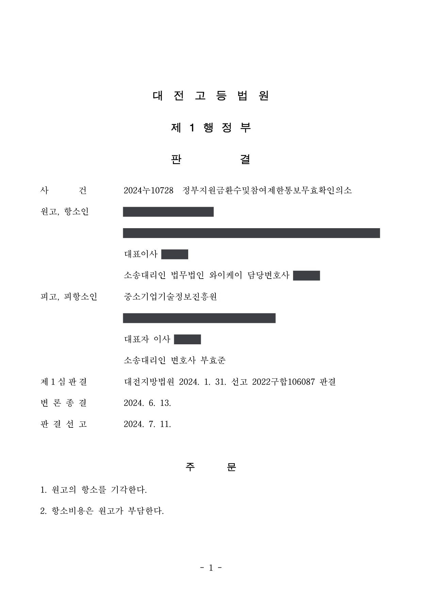
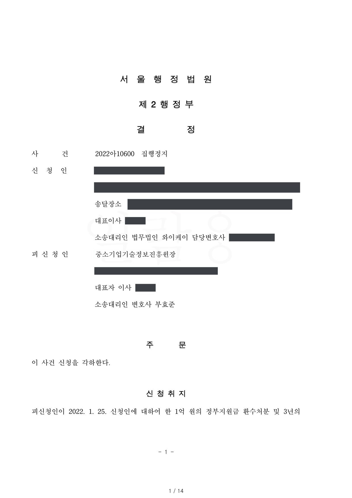
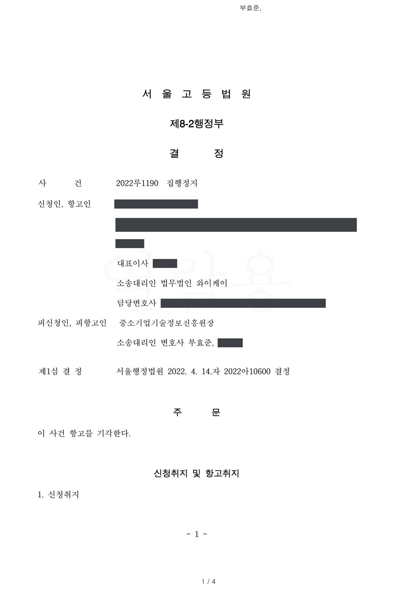
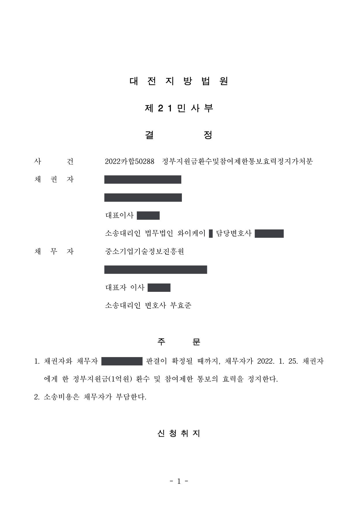

스마트공장 지원사업 참여제한 통보·환수조치 효력 부존재확인 소송 (1·2심, 집행정지·가처분)
대전지방법원 2022구합106087 · 대전고등법원 2024누10728 · 서울행정법원 2022아10600 · 서울고등법원 2022루1190 · 대전지방법원 2022카합50288 · 담당변호사 부효준
판결문





사건의 요지
스마트공장 보급·확산 지원사업 협약에 따라 이루어진 3년 참여제한 통보와 정부지원금 환수조치가 항고소송의 대상인 행정처분인지, 협약에 따른 의사표시에 불과한지가 다투어진 사건입니다. 집행정지 신청의 적법성(각하 결정과 항고심), 민사 가처분, 본안 1·2심을 함께 수행했습니다.
사건의 주요 내용
원고 회사(소프트웨어 개발업)는 소형 목재 제품을 만드는 도입기업과 컨소시엄을 이루어 2019년 스마트공장 보급·확산 사업의 공급기업으로 선정되었고, 2019년 12월 전담기관·제조혁신센터·도입기업과 총사업비 약 2억 4,200만 원(정부지원금 1억 원), 사업기간 2020년 8월까지의 지원사업 협약을 체결하였습니다. 여러 가공 공정을 하나의 설비로 처리하는 통합 자동화설비(범용기)와 생산관리시스템을 구축하는 과제였습니다.
원고 회사가 제작한 범용기의 생산량이 사업계획서의 목표에 미치지 못하여 설비를 공정별 전용기 3대로 바꾸어 다시 제작하게 되었고, 도입기업이 제품 도면을 주지 않고 중도금 지급도 거절하는 갈등 끝에 원고 회사는 2020년 8월 과제 포기 의사를 밝혔습니다. 제조혁신센터는 평가위원회를 거쳐 도입기업과 원고 회사 모두에게 책임이 있다고 보아 협약을 해약하고 정부지원금 환수를 통지하였으며, 전담기관은 제재조치위원회 심의를 거쳐 2021년 9월 원고 회사에 3년 참여제한과 정부지원금 1억 원 전액 환수를 통보하였습니다(이의신청은 2022년 1월 받아들여지지 않음).
원고 회사는 서울행정법원에 취소소송을 제기하면서 집행정지를 신청하였으나, 집행정지 신청은 각 조치가 항고소송의 대상인 처분이 아니라는 이유로 2022년 4월 각하되었고 항고도 받아들여지지 않았습니다. 이어 대전지방법원 민사부에 낸 효력정지 가처분은 2022년 10월 인용되었고, 본안은 협약에 기한 3년 참여제한 통보와 1억 원 반납채무의 효력 부존재 확인을 구하는 소송으로 대전지방법원 행정부에서 진행되었습니다. 부효준 변호사는 전담기관을 대리하여 이 사건들을 모두 수행하였습니다.
원고의 주장
- 과제를 중도 포기한 것은 도입기업의 무리한 설계변경 요구, 제품규격도면 확인 거절, 하드웨어 시스템 구축 협조 거절, 중도금 지급 거절 때문이므로 협약 해지에 원고 회사의 귀책사유가 없고, 중소기업기술혁신법 제31조 제1항·제32조 제1항이 정한 참여제한·환수 사유에도 해당하지 않는다고 주장하였습니다.
- 관리지침이 2020년 8월 개정되어 '정당한 사유 없이 포기한 경우'의 제재규정이 신설되었으나 이 사건 사실관계는 그 전에 종결되었으므로 개정 지침을 적용할 수 없고, 환수 여부는 2021년 9월 세부관리기준 제41조 제3항(사업의 최종 수혜자인 도입기업이 1차적 책임)에 따라 정해져야 한다고 주장하였습니다.
- 세부관리기준 [별표 1]에 따르면 정당한 사유 없는 포기·중단의 참여제한기간은 1년인데 3년으로 정한 것은 위법하고, 연구개발을 성실히 수행하였으므로 기간 단축과 환수액 감면이 이루어져야 하며, 과실 정도가 다른 도입기업과 일률적으로 3년 참여제한을 한 것은 신뢰보호원칙·비례원칙에 어긋난다고 주장하였습니다.
부효준 변호사의 주장
- 참여제한 통보와 환수조치는 중소기업기술혁신법 제31조·제32조에 따른 행정처분이 아니라 공법상 계약인 이 사건 협약(제13조)과 관리지침(제40조·제44조 등)에 따른 조치이므로, 항고소송이나 집행정지의 대상이 되지 않고 그 효력은 협약의 내용에 따라 정해진다고 주장하였습니다.
- 과제 포기에는 원고 회사의 과실이 있다고 주장하였습니다. 원고 회사가 제작한 범용기의 생산량이 사업계획서의 목표에 미달하였고, 사업 전에 도입기업의 요구사항과 사업 내용을 명확히 확정하지 않았으며, 목표 달성과 불량률 감소를 위한 대안을 제시하지 못하였다는 것입니다.
- 협약 제13조 제4항·제5항은 누구의 귀책사유로 협약이 해지되든 정부지원금을 직접 받은 공급기업이 이를 반환하도록 정하고 있고, 관리지침 별표는 협약해약·정당한 사유 없는 포기의 경우 참여제한 3년과 전액 환수를 정하고 있으므로, 각 조치는 협약과 지침이 정한 대로 이루어진 것이라고 주장하였습니다.
- 가처분 사건에서는 본안이 공법상 당사자소송이어서 민사법원에 낸 가처분은 관할을 위반한 것이고, 다른 법원에 같은 청구가 계속 중이어서 중복소송이며, 참여제한은 이 사업에 한정되어 다른 사업이나 영업활동에는 제약이 없으므로 신청의 이익도 없다고 다투었습니다.
법원의 판단
1심(대전지방법원)과 항소심(대전고등법원)은 모두 원고 회사의 청구를 받아들이지 않았습니다. 법원은 이 사건 사업이 중소기업기술혁신법 제10조 제1항의 기술혁신사업이나 제11조의 산학협력 지원사업에 해당하지 않고, 각 조치는 같은 법 제31조·제32조에 따른 처분이 아니라 공법상 계약인 협약과 개정 관리지침(협약 제18조 제2항과 지침 부칙 제3조에 따라 적용)에 따른 조치라고 보았습니다. 참여제한기간을 1년으로 정한 2021년 9월 세부관리기준은 그 시행 전에 이루어진 이 사건 조치에 적용될 여지가 없다고 하였습니다.
귀책사유에 관하여는, 도입기업이 도면을 주지 않고 중도금을 지급하지 않은 과실도 있지만, 원고 회사가 제작한 범용기가 사업계획서의 생산량 목표에 훨씬 미치지 못하여 전용기로 변경하게 된 점, 사업 전에 도입기업의 생산량을 확인하지 않은 채 협약 체결에 급급하여 사업 내용을 명확히 확정하지 못한 점, 목표 달성과 불량률 감소를 위한 대안을 제시하지 못한 점을 들어 원고 회사에게도 귀책사유가 있다고 판단하였습니다. 협약과 관리지침·별표에 따른 3년 참여제한과 전액 환수는 비례원칙·신뢰보호원칙에 어긋나지 않고, 도입기업의 과실은 민사 분쟁으로 해결할 문제일 뿐 환수금액을 감액할 사유가 아니라고 보았습니다.
그 전의 보전절차에서는 결론이 갈렸습니다. 서울행정법원은 각 조치가 처분이 아니라는 이유로 집행정지 신청을 각하하였고 서울고등법원도 항고를 받아들이지 않았습니다. 반면 대전지방법원 민사부는 당사자소송에는 행정소송법상 집행정지 규정이 준용되지 않아 민사집행법상 가처분이 가능하다고 보고, 협약 해지의 주된 책임이 도입기업에 있는 것으로 보인다는 이유로 통보의 효력을 정지하는 가처분을 인용하였습니다. 그러나 본안 1·2심은 위와 같이 원고 회사의 귀책사유를 인정하여 가처분 단계의 잠정적 판단과 다른 결론에 이르렀습니다.
이 사건 사업이 중소기업기술혁신법 제10조 제1항에서 정한 기술혁신사업 또는 제11조에서 정한 산학협력지원사업에 해당한다고 볼 수 없을 뿐만 아니라, 이 사건 각 조치는 중소기업기술혁신법 규정에 따른 처분이 아닌 공법상 계약인 이 사건 협약에 따른 조치에 불과하므로, 이 사건 사업이 기술혁신사업 또는 산합협력지원사업에 해당함을 전제하여 이 사건 각 조치 여부가 중소기업기술혁신법 제31조 제1항, 제32조 제1항에 따라 결정되어야 한다는 취지의 원고의 이 부분 주장은 이유 없다.
대전고등법원 2024누10728 판결 이유 '4. 나. 구체적 판단 1)'
전용기 제작과 관련하여 도입기업이 원고의 요구와 달리 제품 도면이 아닌 샘플만 제공한 점, 중간점검이 완료되었음에도 이 사건 협약 제10조 제6항에 따른 중도금을 원고에게 지급하지 않은 점 등에 비추어 보면 이 사건 협약이 제대로 이행되지 아니한 데에는 도입기업에게도 귀책사유가 존재한다고 볼 수 있다. 그러나 앞서 본 인정 사실에 더하여 앞서 든 증거, 변론 전체의 취지에 비추어 알 수 있는 다음과 같은 사정에 따르면, 이 사건 협약이 제대로 이행되지 아니한 데에는 도입기업과 더불어 원고에게도 귀책사유가 있다고 봄이 타당하므로, 도입기업과 원고 모두에게 이 사건 과제를 중도 포기한 책임이 있다고 본 협약해지 평가위원회의 평가결과가 부당하다고 볼 수 없다. 따라서 피고가 평가위원회의 평가결과, 제재조치위원회의 심의결과 등을 바탕으로 이 사건 협약 제13조, 개정 관리지침 제40조, 제44조 등에 따라 원고에게 이 사건 각 조치를 한 것이 위법하다거나 부당하여 그 효력이 없다고 볼 수 없다.
대전고등법원 2024누10728 판결 이유 '4. 나. 구체적 판단 2)'
결국 이 사건 협약에서는 누구에게 귀책사유가 있는지 여부와 관계없이 정부지원금을 직접 수령한 공급기업인 원고에게 반환의무를 부과하고 있음을 알 수 있고, 그와 같이 지원금을 직접 수령한 기업에게 반환의무를 부과한 협약의 내용이 부당하다고 볼 수 없다.
(중략)
피고는 이 사건 협약 및 개정 관리지침에서 정한 바에 따라 이 사건 환수조치를 한 것에 불과하므로, 이를 부당하다거나 비례의 원칙 내지 신뢰보호의 원칙에 위배된 것이라고 볼 수 없다(이 사건 협약이 해지된 데 있어서 도입기업의 귀책사유가 있다고 하더라도, 정부지원금 환수로 인한 손해가 발생하여 그것이 도입기업과의 민사 분쟁 대상이 됨은 별론으로 하고, 이를 이유로 피고가 원고에 대하여 환수금액을 감액하여야 할 의무를 부담한다고 볼 수 없을뿐더러 피고가 도입기업에게 환수금액 일부를 직접 청구할 근거도 없다).
대전고등법원 2024누10728 판결 이유 '4. 나. 구체적 판단 2) 바)'
※ 판결 이유 가운데 이 사건의 판단 기준이 된 부분을 그대로 옮긴 것으로, 당사자 이름 등은 가렸습니다.
이 사건이 보여 주는 것
스마트공장 보급·확산 사업처럼 협약과 관리지침에 근거하여 이루어지는 참여제한·지원금 환수는 법률(중소기업기술혁신법)에 따른 행정처분이 아니라 공법상 계약에 따른 의사표시로 취급되었습니다. 그 결과 취소소송과 집행정지로는 다툴 수 없고(각하), 효력 부존재 확인을 구하는 당사자소송과 민사집행법상 가처분으로 다투게 됩니다. 소송 형태를 잘못 고르면 본안 판단에 이르지 못하므로, 조치의 근거가 법률인지 협약·지침인지부터 확인해야 합니다.
공급기업과 도입기업의 다툼으로 과제가 중단된 경우에도, 협약이 정부지원금을 직접 받은 공급기업에게 반환의무를 지우고 있다면 도입기업의 과실은 환수금액을 줄이는 사유가 되지 않고 도입기업과의 민사 분쟁으로 해결할 문제로 보았습니다. 사업계획서의 생산량 목표 미달과 사업 전 요구사항 미확정이 공급기업의 귀책사유로 평가된 점도 참고할 만합니다.
관련 법령중소기업 기술혁신 촉진법 제10조 제1항, 제11조, 제31조 제1항, 제32조 제1항 · 행정소송법 제3조 제2호(당사자소송), 제8조 제2항, 제23조 제2항, 제44조 제1항 · 민사집행법 제300조 제2항 · 민사소송법 제259조 · 스마트공장 보급·확산 사업 관리지침 제25조, 제40조, 제41조, 제44조, 부칙 제3조, 별표 · 스마트공장 보급·확산 지원사업 협약 제13조, 제18조
관련 단어스마트공장 보급·확산 사업참여제한정부지원금 환수공법상 계약처분성당사자소송효력 부존재확인집행정지 각하가처분공급기업 귀책사유중소기업기술혁신법 제31조관리지침
비슷한 처분을 받으셨다면
행정처분은 처분이 있음을 안 날부터 90일 이내에 행정심판이나 취소소송으로 다투어야 하고, 기간이 지나면 돌이킬 수 없는 처분은 집행정지를 서둘러야 합니다. 처분서를 받은 날짜부터 확인해 드립니다.